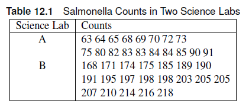
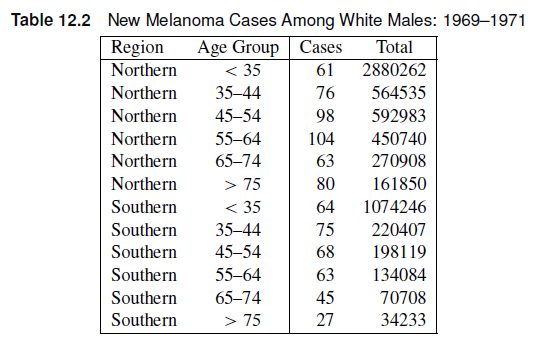
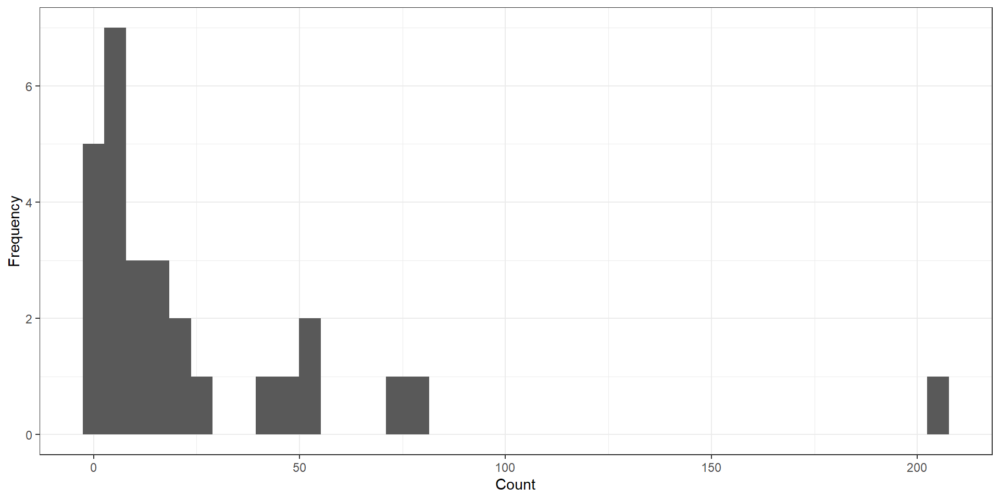
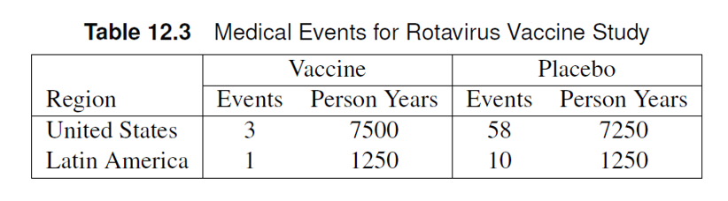

Rows: 38
Columns: 2
$ lab <chr> "A", "A", "A", "A", "A", "A", "A", "A", "A", "A", "A", "A", "A"…
$ counts <int> 63, 64, 65, 68, 69, 70, 72, 73, 75, 80, 82, 83, 83, 84, 84, 85,…We have discussed how to model different categorical responses - Mantel-Haenszel: associations between ordinal and nominal variables - Logistic Regression: dichotomous and polytomous responses
Note
Counts are also a discrete variable. Typically assumed to be a normal distribution, but its discreteness means it’s not a perfect fit to a continuous distribution like the normal distribution. We use the Poisson distribution to model counts.
Suppose a response variable Y is distributed as Poisson and has expected value 𝜇 for a unit of time/space. We can write a Poisson regression model as a loglinear model such that:
\[ \eta = \log \mu = \alpha + \sum_i{\beta_ix_i} \]
Note
The link function \(\eta\) is logarithmic in nature, which means a 1-unit increase in \(x_i\) leads to an increase of \(e^{\beta_i}\) in the response variable.
Sometimes, counts are measured for an interval of time (seconds, hours, weeks) or space (inches, kilometers, miles), which we designate as \(N\).
Poisson Rates
The ratio \(Y/N\) can be interpreted as the rate of counts per unit time. Examples include:
The expected values of \(Y/N\) is \(\mu/N\). The loglinear model can now be written as:
Note
\[ \log \mu/N = \alpha + \sum_i\beta_ix_i \to log \mu = \log N + \alpha + \sum_i\beta_ix_i \]
\(\log N\) is called the offset term.
Note
The offset can be a function of the explanatory variables, such that \(N = N(x_i)\).
Incidence Rate
We define an incidence rate \(\lambda (x_i)\) is defined as:
\[ \lambda(x_i) = \frac{\mu(x_i)}{N(x_i)} \]
We can rewrite the model as:
\[ \eta_i = \log \lambda(x_i) = \alpha + \sum_i\beta_ix_i \]
We can specify the model using the following syntax:
\[ Y_i \sim Poisson(\lambda_i) \]
\[ \eta_i =\log \lambda(x_i) = \alpha + \sum_i\beta_ix_i \]
Note that the linear predictor is in a logarithmic scale with respect to the incidence rates. Suppose we want to compare $ _1 = (x_1)$ and $ _2 = (x_2)$ in terms of the linear predictors \(\eta_1\) and \(\eta_2\)
\[ \eta_1 - \eta_2 = \log \lambda_1 - \log \lambda_2 = \log (\lambda_1 / \lambda_2) \]
Note
The estimated differences in the linear predictor estimates the logarithm of the ratio of the two incidence rates.
\[ \exp (\eta_1 - \eta_2) = \lambda_1/\lambda_2 \]
Note
Exponentiating the differences in the linear predictors will provide an estimate of the incidence rate ratio, similar to the incidence density ratio discussed in Chapter 2.
SASThe GENMOD, GLM, and GLIMMIX procedures can perform Poisson regression in SAS.
GENMOD procedure
The GENMOD procedure has very similar syntax to the LOGISTIC procedure.
GENMOD can handle other distributions, we need to specify the DIST option in the MODEL statement as DIST=POISSON.TYPE3 option to the MODEL statement.EFFECTPLOT statement.LSMEANS statement.The linear predictor differences and incidence rate ratios can be tested using CONTRAST statements OR estimated using the ESTIMATE statement.
Warning
The criteria for assessing goodness of fit in Poisson regression is the Pearson \(\chi^2\)/DF, where DF is the degrees of freedom. This value is included in the goodness of fit table in the “Scaled Pearson X2” row. The Value/DF should be close to 1.
RThe glm() function can be used to estimate a Poisson GLM. The family should be specified as family="poisson".
Tip
emmeans, contrast and Anova also works with Poisson GLMs in a similar way as the logistic regression models created using glm().
Warning
The criteria for assessing goodness of fit in Poisson regression is the Pearson \(\chi^2\)/DF, where DF is the degrees of freedom. This value is included in the output of the check_overdispersion() function in the performance package in R as the dispersion ratio.
The table shows salmonella counts for samples taken from two science labs. The researchers want to determine whether the counts are different between the labs. Estimate the incidence rate ratio of salmonella between the two labs.

Call:
glm(formula = counts ~ lab, family = "poisson", data = salmonella)
Coefficients:
Estimate Std. Error z value Pr(>|z|)
(Intercept) 4.34019 0.02691 161.29 <2e-16 ***
labB 0.93511 0.03130 29.87 <2e-16 ***
---
Signif. codes: 0 '***' 0.001 '**' 0.01 '*' 0.05 '.' 0.1 ' ' 1
(Dispersion parameter for poisson family taken to be 1)
Null deviance: 1047.539 on 37 degrees of freedom
Residual deviance: 40.345 on 36 degrees of freedom
AIC: 297.69
Number of Fisher Scoring iterations: 4Analysis of Deviance Table (Type II tests)
Response: counts
LR Chisq Df Pr(>Chisq)
lab 1007.2 1 < 2.2e-16 ***
---
Signif. codes: 0 '***' 0.001 '**' 0.01 '*' 0.05 '.' 0.1 ' ' 1# Overdispersion test
dispersion ratio = 1.111
Pearson's Chi-Squared = 40.008
p-value = 0.297 lab rate SE df asymp.LCL asymp.UCL null z.ratio p.value
A 76.7 2.06 Inf 72.8 80.9 1 161.289 <0.0001
B 195.4 3.13 Inf 189.4 201.7 1 329.823 <0.0001
Confidence level used: 0.95
Intervals are back-transformed from the log scale
Tests are performed on the log scale contrast ratio SE df asymp.LCL asymp.UCL null z.ratio p.value
A / B 0.393 0.0123 Inf 0.369 0.417 1 -29.872 <0.0001
Confidence level used: 0.95
Intervals are back-transformed from the log scale
Tests are performed on the log scale The scaled Pearson chi-square Value/DF = 1.11, which is close to 1. This supports the use of the Poisson distribution to model the salmonella counts.
There is strong evidence of a difference in counts between the two labs (\(\chi^2\) = 1007, p < 0.0001). The incidence rate ratio is 0.39 (95% CI: 0.37, 0.42), which means there is 61% lower average counts in Lab A compared to Lab B.
The file urgentcare_queue.csv includes simulated queueing data from urgent care clinics located at two cities (A and B). The number of people in queue at the time when the urgent care clinics open is recorded in the variable “queue”. The “Medicaid” variable indicates whether the clinic accepts Medicaid or not.
Use an interaction model to test whether the location and Medicaid acceptance affect the length of the queue of urgent care clinics at the start of the workday. Is the Poisson distribution a good fit for the data? Is the interaction significant at the 0.10 level?
If the interaction is non-significant, remove the interaction term and re-run the analysis to estimate the incidence rate ratios between the queues in urgent care clinics in City A and B. Use 0.05 as the significance level.
The file urgentcare_queue.csv includes simulated queueing data from urgent care clinics located at two cities (A and B). The number of people in queue at the time when the urgent care clinics open is recorded in the variable “queue”. The “Medicaid” variable indicates whether the clinic accepts Medicaid or not.
Use an interaction model to test whether the location and Medicaid acceptance affect the length of the queue of urgent care clinics at the start of the workday. Is the Poisson distribution a good fit for the data? Is the interaction significant at the 0.10 level?
If the interaction is non-significant, remove the interaction term and re-run the analysis to estimate the incidence rate ratios between the queues in urgent care clinics in City A and B. Use 0.05 as the significance level.
proc genmod data=work.urgent ;
class city medicaid;
model queue = city|medicaid / dist=poisson link=log type3 ;
lsmeans city*medicaid/ilink cl ;
effectplot interaction (sliceby=city);
run;
proc genmod data=work.urgent;
class city medicaid;
model queue = city medicaid / dist=poisson link=log type3 ;
lsmeans city / diff=all ilink cl;
lsmeans medicaid/ diff=all exp cl;
estimate "IRR between City A and B" city 1 -1;
run;Rows: 80
Columns: 3
$ city <fct> A, A, A, A, A, A, A, A, A, A, A, A, A, A, A, A, A, A, A, A, A…
$ medicaid <fct> Yes, Yes, Yes, No, Yes, No, No, Yes, Yes, Yes, Yes, Yes, Yes,…
$ queue <int> 4, 6, 4, 4, 6, 3, 6, 2, 3, 3, 3, 2, 6, 8, 7, 7, 5, 4, 7, 5, 6…# Overdispersion test
dispersion ratio = 0.911
Pearson's Chi-Squared = 69.200
p-value = 0.697Analysis of Deviance Table (Type II tests)
Response: queue
LR Chisq Df Pr(>Chisq)
city 133.076 1 <2e-16 ***
medicaid 1.332 1 0.2485
city:medicaid 0.613 1 0.4336
---
Signif. codes: 0 '***' 0.001 '**' 0.01 '*' 0.05 '.' 0.1 ' ' 1
Call:
glm(formula = queue ~ city + medicaid, family = "poisson", data = urgent)
Coefficients:
Estimate Std. Error z value Pr(>|z|)
(Intercept) 1.68311 0.10370 16.230 <2e-16 ***
cityB 0.92258 0.08423 10.953 <2e-16 ***
medicaidYes -0.10868 0.09318 -1.166 0.243
---
Signif. codes: 0 '***' 0.001 '**' 0.01 '*' 0.05 '.' 0.1 ' ' 1
(Dispersion parameter for poisson family taken to be 1)
Null deviance: 205.466 on 79 degrees of freedom
Residual deviance: 70.076 on 77 degrees of freedom
AIC: 384.42
Number of Fisher Scoring iterations: 4# Overdispersion test
dispersion ratio = 0.911
Pearson's Chi-Squared = 70.132
p-value = 0.697Analysis of Deviance Table (Type II tests)
Response: queue
LR Chisq Df Pr(>Chisq)
city 133.076 1 <2e-16 ***
medicaid 1.332 1 0.2485
---
Signif. codes: 0 '***' 0.001 '**' 0.01 '*' 0.05 '.' 0.1 ' ' 1 city rate SE df asymp.LCL asymp.UCL null z.ratio p.value
A 5.1 0.392 Inf 4.38 5.93 1 21.198 <0.0001
B 12.8 0.667 Inf 11.58 14.20 1 49.076 <0.0001
Results are averaged over the levels of: medicaid
Confidence level used: 0.95
Intervals are back-transformed from the log scale
Tests are performed on the log scale contrast ratio SE df asymp.LCL asymp.UCL null z.ratio p.value
A / B 0.397 0.0335 Inf 0.337 0.469 1 -10.953 <0.0001
Results are averaged over the levels of: medicaid
Confidence level used: 0.95
Intervals are back-transformed from the log scale
Tests are performed on the log scale medicaid rate SE df asymp.LCL asymp.UCL null z.ratio p.value
No 8.54 0.728 Inf 7.22 10.09 1 25.159 <0.0001
Yes 7.66 0.354 Inf 6.99 8.38 1 44.053 <0.0001
Results are averaged over the levels of: city
Confidence level used: 0.95
Intervals are back-transformed from the log scale
Tests are performed on the log scale contrast ratio SE df asymp.LCL asymp.UCL null z.ratio p.value
A / B 0.397 0.0335 Inf 0.337 0.469 1 -10.953 <0.0001
Results are averaged over the levels of: medicaid
Confidence level used: 0.95
Intervals are back-transformed from the log scale
Tests are performed on the log scale The Value/DF of the Scaled Pearson \(\chi^2\) (Interaction Model: 0.911 ) is close to 1, which means the Poisson distribution assumption is appropriate. There is no evidence of an interaction between city and medicaid (\(\chi^2\) = 0.61, p=0.43) at the 0.10 level.
The Value/DF of the Scaled Pearson \(\chi^2\) for the main effects model is also close to 1 (0.911). The estimated incidence rate of queues in City A is 60% less than that in City B (IRR = 0.40 (95% CI: 0.34, 0.47))
The table below includes counts of melanoma cases reported in 1969-1971 for white males in two areas. The totals are the sizes of the estimated populations at risk. The researchers were interested in whether the incidence densities varied across age groups and region.

data melanoma;
input age $ region $ cases total;
1ltotal=log(total); *calculates the logarithm of the total;
datalines;
35-44 south 75 220407
45-54 south 68 198119
55-64 south 63 134084
65-74 south 45 70708
75+ south 27 34233
<35 south 64 1074246
35-44 north 76 564535
45-54 north 98 592983
55-64 north 104 450740
65-74 north 63 270908
75+ north 80 161850
<35 north 61 2880262
;ltotal variable performs the logarithmic transformation of the offset variable, which is the total number of tests.
Age_Group Region Cases Total
1 <35 Northern 61 2880262
2 35-44 Northern 76 564535
3 45-54 Northern 98 592983
4 55-64 Northern 104 450740
5 65-74 Northern 63 270908
6 >75 Northern 80 161850
7 <35 Southern 64 1074246
8 35-44 Southern 75 220407
9 45-54 Southern 68 198119
10 55-64 Southern 63 134084
11 65-74 Southern 45 70708
12 >75 Southern 27 34233proc genmod data=melanoma;
class region (ref='north') age (ref='<35');
model cases = age region
/ dist=poisson link=log offset=ltotal type3 cl ; *the offset should be in the LOGARITHMIC SCALE;
estimate "75+ vs <35" age 0 0 0 0 1 -1/exp;
lsmeans age/ ilink cl diff = all adjust=tukey;
lsmeans region /ilink cl diff = all ;
run;
Call:
glm(formula = Cases ~ Age_Group + Region, family = "poisson",
data = melanoma, offset = log(Total))
Coefficients:
Estimate Std. Error z value Pr(>|z|)
(Intercept) -10.65831 0.09518 -111.97 <2e-16 ***
Age_Group35-44 1.79737 0.12093 14.86 <2e-16 ***
Age_Group45-54 1.91309 0.11844 16.15 <2e-16 ***
Age_Group55-64 2.24180 0.11834 18.94 <2e-16 ***
Age_Group65-74 2.36572 0.13152 17.99 <2e-16 ***
Age_Group>75 2.94468 0.13205 22.30 <2e-16 ***
RegionSouthern 0.81948 0.07103 11.54 <2e-16 ***
---
Signif. codes: 0 '***' 0.001 '**' 0.01 '*' 0.05 '.' 0.1 ' ' 1
(Dispersion parameter for poisson family taken to be 1)
Null deviance: 895.8197 on 11 degrees of freedom
Residual deviance: 6.2149 on 5 degrees of freedom
AIC: 92.44
Number of Fisher Scoring iterations: 4# Overdispersion test
dispersion ratio = 1.223
Pearson's Chi-Squared = 6.115
p-value = 0.295Analysis of Deviance Table (Type II tests)
Response: Cases
LR Chisq Df Pr(>Chisq)
Age_Group 796.74 5 < 2.2e-16 ***
Region 124.22 1 < 2.2e-16 ***
---
Signif. codes: 0 '***' 0.001 '**' 0.01 '*' 0.05 '.' 0.1 ' ' 1 Age_Group rate SE df asymp.LCL asymp.UCL null z.ratio p.value
<35 10.1 0.904 Inf 8.48 12.0 1 25.841 <0.0001
35-44 60.9 4.960 Inf 51.95 71.5 1 50.486 <0.0001
45-54 68.4 5.320 Inf 58.74 79.7 1 54.336 <0.0001
55-64 95.0 7.380 Inf 81.62 110.7 1 58.623 <0.0001
65-74 107.6 10.400 Inf 89.02 130.0 1 48.402 <0.0001
>75 191.9 18.700 Inf 158.56 232.4 1 53.934 <0.0001
Results are averaged over the levels of: Region
Confidence level used: 0.95
Intervals are back-transformed from the log scale
Tests are performed on the log scale contrast ratio SE df asymp.LCL asymp.UCL null z.ratio p.value
contrast1 19 2.51 Inf 14.7 24.6 1 22.300 <0.0001
Results are averaged over the levels of: Region
Confidence level used: 0.95
Intervals are back-transformed from the log scale
Tests are performed on the log scale Note that the Scaled Pearson Chi-Square is 1.24, which is slightly further away from 1 and should be examined more closely using methods we will discuss later in the chapter. The overdispersion test using the performance package yielded a p-value of 0.295, which indicates there is no evidence of overdispersion. This result suggests we can continue analyzing the data using the Poisson distribution.
There is strong evidence of an age effect (\(\chi^2\) = 797, p <0.0001) and region (\(\chi^2\) = 124.22, p < 0.001).
The incidence rate of Melanoma in the 75+ age group is 19 times (95% CI: 14.67, 24.62) that in the <35 age group.
The file resident_hours.csv contains the annual count of patients assisted by medical residents at a hospital in Asia. Researchers wanted to test whether the patient assistance rate (#patients per hour) has decreased throughout the years. The number of hours spent on duty is listed as the “time” variable— with “ltime” being the logarithm of the time variable.
Note
Because we are performing multiple contrasts simultaneously, we need to account for Type I error inflation. Use the BOnferroni correction.
The file resident_hours.csv contains the annual count of patients assisted by medical residents at a hospital in Asia. Researchers wanted to test whether the patient assistance rate (#patients per hour) has decreased throughout the years. The number of hours spent on duty is listed as the “time” variable— with “ltime” being the logarithm of the time variable.
Rows: 38
Columns: 4
$ year <int> 2021, 2021, 2021, 2021, 2021, 2021, 2021, 2021, 2021, 2021, 202…
$ counts <int> 2864, 2907, 2901, 2890, 2966, 2896, 2934, 2924, 2912, 2889, 203…
$ time <int> 3086, 3145, 3163, 3049, 3136, 3093, 3137, 3089, 3089, 3109, 313…
$ ltime <dbl> 8.034631, 8.053569, 8.059276, 8.022569, 8.050703, 8.036897, 8.0…
Call:
glm(formula = counts ~ year, family = "poisson", data = resident,
offset = log(time))
Coefficients:
Estimate Std. Error z value Pr(>|z|)
(Intercept) -0.066925 0.005864 -11.41 <2e-16 ***
year2022 -0.373730 0.008527 -43.83 <2e-16 ***
year2023 -1.255312 0.010705 -117.26 <2e-16 ***
---
Signif. codes: 0 '***' 0.001 '**' 0.01 '*' 0.05 '.' 0.1 ' ' 1
(Dispersion parameter for poisson family taken to be 1)
Null deviance: 15918.861 on 37 degrees of freedom
Residual deviance: 27.912 on 35 degrees of freedom
AIC: 383.2
Number of Fisher Scoring iterations: 3# Overdispersion test
dispersion ratio = 0.795
Pearson's Chi-Squared = 27.838
p-value = 0.8Analysis of Deviance Table (Type II tests)
Response: counts
LR Chisq Df Pr(>Chisq)
year 15891 2 < 2.2e-16 ***
---
Signif. codes: 0 '***' 0.001 '**' 0.01 '*' 0.05 '.' 0.1 ' ' 1 year rate SE df asymp.LCL asymp.UCL null z.ratio p.value
2021 2914 17.10 Inf 2881 2948 1 1360.439 <0.0001
2022 2005 12.40 Inf 1981 2030 1 1228.311 <0.0001
2023 831 7.44 Inf 816 845 1 750.526 <0.0001
Confidence level used: 0.95
Intervals are back-transformed from the log scale
Tests are performed on the log scale contrast ratio SE df asymp.LCL asymp.UCL null z.ratio p.value
contrast_2021v2022 1.45 0.0124 Inf 1.43 1.48 1 43.831 <0.0001
contrast_2022v2023 2.41 0.0263 Inf 2.36 2.47 1 80.972 <0.0001
Confidence level used: 0.95
Conf-level adjustment: bonferroni method for 2 estimates
Intervals are back-transformed from the log scale
P value adjustment: bonferroni method for 2 tests
Tests are performed on the log scale The Scaled Pearson \(\chi^2\) is 0.8, which is slightly lower than 1. In this course, we are only concerned if the Scaled Pearson X2 is above 1, so we can say that the Poisson distribution is appropriate to use.
There is an overall effect of year ($^2 = 15891, p < 0.0001).
When looking at multiple pairwise differences, it is important to adjust for multiplicity, hence we added adjust=bonferroni. After applying the Tukey-Kramer adjustment, we estimate that the patient assistance rate is 45% times higher than that in 2021 compared to 2022 (95% CI: 43%, 48%). Additionally, the patient assistance rate is 141% (95% CI: 136%, 147%) higher in 2022 compared to 2023.
If we want to continue using the Poisson distribution, we can introduce a scaling factor \(\phi\) such that the variance is assumed to be \(\phi \mu\). \(\phi\) is then approximated using the data.
We can use alternative distributions like the negative binomial distribution. The negative binomial can be reparameterized by multiplying a scaling factor to account for additional dispersion in the data. Specifically, the variance is assumed to be \(\phi (1+k\mu)\).
Adding random effects to the model can account for the excess variability that is unaccounted for by the current model.
A potential cause for overdispersion is the presence of excess zeroes. These zeroes can exist due to the nature of the process, method of measurement, or to external factors. Zero-inflated Poisson, Zero-inflated Negative Binomial, and hurdle models are used to account for these zeroes. The approach taken depends on the cause of excess zeroes.
The negative binomial model arises as a continuous mixture of Poisson distributions where the rate parameters follow a Gamma distribution. Hence, using the negative binomial model is also referred to as the Poisson-Gamma reparameterization.
Tip
Biological processes tend to agree with negative binomial models more than Poisson regression. Rule of thumb is to use Poisson unless the data is overdispersed, in which you use the negative binomial model.
scale=pearson in the MODEL statement (Quasi-Poisson approach).ROnce check_overdispersion() yields a significant result for overdispersion, we can modify the distribution used by glm() to analyze the data.
Note
family="quasipoisson" uses the quasi-Poisson distribution.
Important
The negative binomial GLM can be implemented using the glm.nb() function in the MASS package.
The data set OVERDISPERSION shows count data from different locations and treatments. Suppose we want to test for a treatment effect.
Rows: 28
Columns: 3
$ location <int> 1, 1, 1, 1, 2, 2, 2, 2, 3, 3, 3, 3, 4, 4, 4, 4, 5, 5, 5, 5, 6…
$ trt <int> 1, 2, 3, 4, 1, 2, 5, 6, 1, 3, 5, 7, 1, 4, 6, 7, 2, 3, 6, 7, 2…
$ count <int> 2, 3, 0, 2, 26, 14, 51, 16, 76, 44, 77, 3, 0, 3, 5, 12, 12, 1…
/*Example of overdispersion*/
proc genmod data=overdispersion;
class location trt;
model count=trt location/type3 dist=poisson;
lsmeans trt/ilink cl;
lsmeans location/ilink cl;
estimate "trt 2 vs trt 4" trt 0 1 0 0 0 -1 0;
run;
/*Pearson adjustment*/
proc genmod data=overdispersion;
class location trt;
model count=trt location/type3 dist=poisson scale=pearson;
lsmeans trt/ilink cl;
lsmeans location/ilink cl;
estimate "trt 2 vs trt 6" trt 0 1 0 0 0 -1 0;
run;
/*Negative Binomial*/
proc genmod data=overdispersion;
class location trt;
model count=trt location/type3 dist=nb ;
lsmeans trt/ilink cl;
lsmeans location/ilink cl;
estimate "trt 2 vs trt 6" trt 0 1 0 0 0 -1 0;
run;
We start with the Poisson model first and check for overdispersion
Analysis of Deviance Table (Type II tests)
Response: count
LR Chisq Df Pr(>Chisq)
trt 328.33 6 < 2.2e-16 ***
location 598.14 6 < 2.2e-16 ***
---
Signif. codes: 0 '***' 0.001 '**' 0.01 '*' 0.05 '.' 0.1 ' ' 1 trt rate SE df asymp.LCL asymp.UCL null z.ratio p.value
1 20.34 2.460 Inf 16.04 25.78 1 24.897 <0.0001
2 8.14 1.120 Inf 6.21 10.67 1 15.202 <0.0001
3 12.31 1.810 Inf 9.22 16.43 1 17.023 <0.0001
4 8.28 1.250 Inf 6.16 11.15 1 13.967 <0.0001
5 30.17 2.910 Inf 24.96 36.46 1 35.261 <0.0001
6 12.55 2.060 Inf 9.10 17.32 1 15.404 <0.0001
7 3.42 0.607 Inf 2.42 4.84 1 6.931 <0.0001
Results are averaged over the levels of: location
Confidence level used: 0.95
Intervals are back-transformed from the log scale
Tests are performed on the log scale # Overdispersion test
dispersion ratio = 7.255
Pearson's Chi-Squared = 108.820
p-value = < 0.001Overdispersion is detected. First, we check whether the overdispersion is due to excess zeroes by creating a histogram of counts.

While there are a lot of zeroes, there are also nonzero values that can be driving the overdispersion.
Call:
glm(formula = count ~ trt + location, family = "quasipoisson",
data = over)
Coefficients:
Estimate Std. Error t value Pr(>|t|)
(Intercept) 1.0651 1.0402 1.024 0.32210
trt2 -0.9156 0.4528 -2.022 0.06137 .
trt3 -0.5023 0.4645 -1.081 0.29660
trt4 -0.8981 0.4883 -1.839 0.08577 .
trt5 0.3943 0.3398 1.160 0.26412
trt6 -0.4824 0.5245 -0.920 0.37223
trt7 -1.7829 0.5331 -3.345 0.00443 **
location2 2.3547 1.0615 2.218 0.04238 *
location3 3.0525 1.0417 2.930 0.01034 *
location4 1.1454 1.1939 0.959 0.35258
location5 2.2234 1.1099 2.003 0.06356 .
location6 3.8372 1.0471 3.665 0.00230 **
location7 1.0181 1.1641 0.875 0.39560
---
Signif. codes: 0 '***' 0.001 '**' 0.01 '*' 0.05 '.' 0.1 ' ' 1
(Dispersion parameter for quasipoisson family taken to be 7.254675)
Null deviance: 1171.998 on 27 degrees of freedom
Residual deviance: 78.956 on 15 degrees of freedom
AIC: NA
Number of Fisher Scoring iterations: 6Analysis of Deviance Table (Type II tests)
Response: count
LR Chisq Df Pr(>Chisq)
trt 45.258 6 4.158e-08 ***
location 82.449 6 1.114e-15 ***
---
Signif. codes: 0 '***' 0.001 '**' 0.01 '*' 0.05 '.' 0.1 ' ' 1 trt rate SE df asymp.LCL asymp.UCL null z.ratio p.value
1 20.34 6.63 Inf 10.74 38.52 1 9.244 <0.0001
2 8.14 3.02 Inf 3.93 16.86 1 5.644 <0.0001
3 12.31 4.89 Inf 5.65 26.81 1 6.320 <0.0001
4 8.28 3.38 Inf 3.73 18.42 1 5.186 <0.0001
5 30.17 7.85 Inf 18.11 50.24 1 13.091 <0.0001
6 12.55 5.55 Inf 5.27 29.88 1 5.719 <0.0001
7 3.42 1.63 Inf 1.34 8.72 1 2.573 0.0101
Results are averaged over the levels of: location
Confidence level used: 0.95
Intervals are back-transformed from the log scale
Tests are performed on the log scale Note
The dispersion parameter of the quasiPoisson model is the same as the dispersion ratio in the overdispersion test.
For the negative binomial model,
Call:
glm.nb(formula = count ~ trt + location, data = over, control = glm.control(maxit = 1000),
init.theta = 5.695838947, link = log)
Coefficients:
Estimate Std. Error z value Pr(>|z|)
(Intercept) 0.8616 0.4893 1.761 0.078238 .
trt2 -0.3832 0.4041 -0.948 0.343030
trt3 -0.3606 0.4148 -0.869 0.384771
trt4 -0.5063 0.4320 -1.172 0.241132
trt5 0.8106 0.3674 2.206 0.027378 *
trt6 -0.2381 0.3976 -0.599 0.549200
trt7 -1.1752 0.4022 -2.922 0.003479 **
location2 2.2499 0.5107 4.406 1.06e-05 ***
location3 2.9928 0.5052 5.924 3.15e-09 ***
location4 1.3887 0.5393 2.575 0.010029 *
location5 2.0278 0.5256 3.858 0.000114 ***
location6 3.5463 0.5075 6.987 2.80e-12 ***
location7 0.8436 0.5501 1.533 0.125180
---
Signif. codes: 0 '***' 0.001 '**' 0.01 '*' 0.05 '.' 0.1 ' ' 1
(Dispersion parameter for Negative Binomial(5.6958) family taken to be 1)
Null deviance: 223.862 on 27 degrees of freedom
Residual deviance: 37.766 on 15 degrees of freedom
AIC: 213.74
Number of Fisher Scoring iterations: 1
Theta: 5.70
Std. Err.: 3.09
2 x log-likelihood: -185.735 Likelihood ratio tests of Negative Binomial Models
Response: count
Model theta Resid. df 2 x log-lik. Test df LR stat.
1 location 1.854654 21 -201.0688
2 trt + location 5.695839 15 -185.7351 1 vs 2 6 15.33371
Pr(Chi)
1
2 0.01781411In the Naive Poisson approach, the Scaled Pearson X2 Value/DF was 7.25, which is significantly higher than 1. We can choose to add scale=Pearson to include a scale factor, making the distribution a quasi-Poisson distribution. The Poisson and quasi-Poisson have the same Least Squares Means (LSMeans) estimates, but have different standard errors. Note that the scale introduces a scaling factor to the variance estimate in the form of the dispersion parameter, which affects the standard errors. For both models, there is a significant treatment effect (\(\chi^2_6\)=45.26, p < 0.0001)
The negative binomial model also includes the dispersion parameter in the results, and has different LSMeans estimates as the Poisson. (LR \(\chi^2_6\) = 15.33, p=0.0178).
The file adverse.csv includes the counts of adverse events recorded for subjects in each of the four experimental treatment regimes for ovarian cancer. The subjects were recruited from three clinics. The researchers want to know if the four treatments differ in incidence density rate of adverse events. (Hint: Is there overdispersion? Did the resulting model converge?)
The file adverse.csv includes the counts of adverse events recorded for subjects in each of the four experimental treatment regimes for ovarian cancer. The subjects were recruited from three clinics. The researchers want to know if the four treatments differ in incidence density rate of adverse events. (Hint: Is there overdispersion? Did the resulting model converge?)
proc genmod data=adverse;
class clinic treatment;
model count = clinic treatment/ type3 dist=poisson;
lsmeans treatment/ilink cl;
run;
proc genmod data=adverse;
class clinic treatment;
model count = clinic treatment/ type3 dist=poisson scale=pearson;
lsmeans treatment/ilink cl;
run;
proc genmod data=adverse;
class clinic treatment;
model count = clinic treatment/ type3 dist=nb;
lsmeans treatment/ilink cl;
run;Rows: 12
Columns: 3
$ Clinic <int> 1, 2, 3, 1, 2, 3, 1, 2, 3, 1, 2, 3
$ Treatment <chr> "a", "a", "a", "b", "b", "b", "c", "c", "c", "d", "d", "d"
$ Count <int> 9, 4, 12, 24, 11, 17, 2, 14, 8, 15, 5, 23# Overdispersion test
dispersion ratio = 4.248
Pearson's Chi-Squared = 25.487
p-value = < 0.001Analysis of Deviance Table (Type II tests)
Response: Count
LR Chisq Df Pr(>Chisq)
Treatment 15.8295 3 0.001229 **
Clinic 7.4103 2 0.024597 *
---
Signif. codes: 0 '***' 0.001 '**' 0.01 '*' 0.05 '.' 0.1 ' ' 1Analysis of Deviance Table (Type II tests)
Response: Count
LR Chisq Df Pr(>Chisq)
Treatment 3.7265 3 0.2926
Clinic 1.7445 2 0.4180
Call:
glm.nb(formula = Count ~ Treatment + Clinic, data = adverse,
control = glm.control(maxit = 1000), init.theta = 11.34489479,
link = log)
Coefficients:
Estimate Std. Error z value Pr(>|z|)
(Intercept) 2.09946 0.31649 6.634 3.28e-11 ***
Treatmentb 0.75575 0.34626 2.183 0.0291 *
Treatmentc 0.02515 0.37506 0.067 0.9465
Treatmentd 0.52200 0.35354 1.477 0.1398
Clinic2 -0.29491 0.30935 -0.953 0.3404
Clinic3 0.23714 0.28942 0.819 0.4126
---
Signif. codes: 0 '***' 0.001 '**' 0.01 '*' 0.05 '.' 0.1 ' ' 1
(Dispersion parameter for Negative Binomial(11.3449) family taken to be 1)
Null deviance: 24.663 on 11 degrees of freedom
Residual deviance: 13.902 on 6 degrees of freedom
AIC: 85.807
Number of Fisher Scoring iterations: 1
Theta: 11.3
Std. Err.: 10.8
2 x log-likelihood: -71.807 # Overdispersion test (using simulated residuals)
dispersion ratio = 0.886
p-value = 0.944Likelihood ratio tests of Negative Binomial Models
Response: Count
Model theta Resid. df 2 x log-lik. Test df LR stat.
1 Treatment 6.662764 8 -74.31619
2 Treatment + Clinic 11.344895 6 -71.80741 1 vs 2 2 2.508777
Pr(Chi)
1
2 0.2852503Likelihood ratio tests of Negative Binomial Models
Response: Count
Model theta Resid. df 2 x log-lik. Test df LR stat.
1 Clinic 4.629789 9 -76.94175
2 Treatment + Clinic 11.344895 6 -71.80741 1 vs 2 3 5.134338
Pr(Chi)
1
2 0.1622204After implementing the Naive Poisson model, the scaled Pearson X2 Value/DF is 4.25, which is a sign that there is overdispersion. There was no convergence issues in implementing the quasiPoisson and the negative binomial model/
Quasipoisson: There is no significant effect of clinic (\(\chi^2_2\) = 1.74, p = 0.42) and treatment (\(\chi^2_3\) = 3.73, p = 0.29).
Negative Binomial: There is no significant effect of clinic (\(\chi^2_2\) = 2.51, p = 0.29) and treatment (\(\chi^2_3\) = 5.13, p = 0.16).
SASTip
For rare events with small number of observed counts, exact methods may be more appropriate. The GENMOD procedure can also implement exact Poisson regression analysis using the exact statement.
The table shows the rotavirus vaccine data for both United States and Latin America. We want to investigate if there is a difference between the incidence densities of the vaccine and placebo groups.

/*Not Exact*/
proc genmod data=rotavirus;
class region treatment;
model counts = treatment region / dist=poisson offset= log_risk type3;
lsmeans treatment/ilink cl;
estimate 'Placebo vs Vaccine' treatment 1 -1 /exp;
/*Exact*/
proc genmod data=rotavirus;
class region treatment /param=ref;
model counts = treatment region / dist=poisson offset= log_risk type3;
lsmeans treatment/ilink cl;
estimate 'Placebo vs Vaccine' treatment 1 /exp;
exact treatment / estimate=odds cltype=exact;
run;It would be advisable to use the exact incidence rate ratio confidence limits and p-values because of the low count of events in the vaccine group. The incidence rate in the placebo group was 17.5 Exact 95% CI: (6.53, 66.05) times that of the vaccine group.
Oftentimes, you can encounter data sets with an abundance of zeroes especially when the event of interest is rare.
Warning
Using a negative binomial distribution or the quasi-Poisson likelihood will not be enough to account for the abundance of zeros.
Zero-inflated models account for excess zeroes that are not accounted for by the Poisson or Negative Binomial distributions.
There are two types of zero inflated models:
Zero-Inflated Models
In zero-inflated models, zero or nonzero counts may occur in the “on” part of the process, with the probability of 0, 1, 2, etc., determined by the counting distribution in the “on” part of the process.
Example: Cars at a traffic intersection, animal sightings.
Hurdle Models
In hurdle models, only nonzero counts may be observed in the “on” part of the process.
Example: Doctor visits, Insurance claims
The zero-inflated models must be described in two processes: the on-off process and the counting process.
Process 1
The on-off part is a binary process. The count process is “off” or 0 with probability \(\pi\) and “on” with probability \(1-\pi\). We call \(\pi\) the inflation probability.
Process 2
When the system is “on”, counts may take on values 0,1,2,… according to a discrete probability distribution such as Poisson or Negative Binomial. This gives rise to Zero-Inflated Poisson (ZIP) models and Zero-Inflated Negative Binomial (ZINB) models.
The resulting probability \(P(Y=y)\) where \(Y\) is the random variable corresponding to the observations from a zero-inflated model is:
\[ P(Y=y) = \begin{cases} \pi + (1-\pi)f(0) & y= 0 \\ (1-\pi)f(y) & y = 1, 2,... \end{cases} \] where \(f(y)\) is the discrete probability distribution corresponding to Poisson/Negative Binomial.
Like the zero-inflated models, hurdle models also have two processes: the on-off process and the counting process.
Process 1
The on-off part is a binary process. The count process is “off” or 0 with probability \(\pi\) and “on” with probability \(1-\pi\). We call \(\pi\) the inflation probability. This is the same as the on-off process for zero-inflated models.
Process 2
The “on” process is slightly different. Note that the hurdle model is used when zero counts is NOT possible during the “on” process. Hence, we have to use a zero-truncated model of the distribution function \(\frac{f(y)}{1-f(0)}, y=1,2,...\)
The resulting probability distribution for the hurdle model is thus:
\[ P(Y=y) = \begin{cases} \pi & y= 0 \\ (1-\pi)\frac{f(y)}{1-f(0)} & y =1,2,... \end{cases} \]
SASThe GENMOD procedure has ZIP and ZINB capabilities, though limited.
Note
Specifying dist=zip and dist=zinb in the model statement will implement zero-inflated Poisson and Negative Binomial analyses, respectively.
Tip
The zeromodel statement includes variables that can introduce group-specific zero inflation.
Warning
The GENMOD procedure cannot implement the Hurdle model.
RThe pscl package includes the zeroinfl() function that can implement zero-inflated Poisson and Negative Binomial models. The hurdle() function can be used to implement hurdle models.
Note
To perform the likelihood ratio test, we use the lrtest() function from the lmtest() package. anova() does not work with zeroinfl().
The data set counts contain simulated data from an experiment investigating the association between exposure level and toxin counts (also in counts.csv. There were \(n_i\) samples taken at the \(i^{th}\) sites, ranging from 2 to 14 samples, at 18 sites. Determine if there is evidence of zero-inflation. Test for an association between exposure level and toxin counts.
data counts;
input ni @@;
site = _n_;
do sample_id=1 to ni;
input exposure_level toxin_count @@; output;
end;
datalines;
6 2 0 82 5 33 0 15 2 35 0 79 1
9 18 0 64 0 80 2 0 0 58 0 7 0 81 0 22 3 50 0
2 34 0 95 0
13 28 1 31 0 63 2 14 0 74 0 44 0 75 3 65 0 74 1 84 5 57 0 29 0 41 0
9 42 0 8 0 91 0 20 0 23 0 22 0 96 4 83 3 56 0
3 64 0 64 1 15 0
4 5 0 73 2 50 2 13 1
2 0 0 41 0
5 83 7 98 1 11 1 28 0 18 0
7 91 0 25 1 51 4 20 0 61 1 34 0 33 2
14 60 0 87 0 94 0 29 0 41 0 78 0 50 0 37 0 15 0 39 0 22 0 82 0 93 0 3 0
12 68 0 26 1 19 0 60 1 93 3 65 0 16 0 79 0 14 0 3 1 90 0 28 3
8 34 1 44 0 62 3 21 0 7 0 17 1 0 2 49 0
13 11 0 27 2 16 1 12 3 52 1 55 0 2 6 89 5 31 5 28 3 51 5 54 13 64 0
9 3 0 36 0 57 0 77 0 41 0 39 0 55 0 57 0 88 1
7 2 0 80 0 41 1 20 0 2 0 27 0 40 0
13 59 0 96 2 47 1 64 0 18 0 30 0 37 0 36 1 69 0 78 1 47 1 86 0 88 0
12 84 6 60 1 33 1 92 0 38 4 6 0 43 3 13 2 18 0 51 0 50 4 68 0
;
Rows: 148
Columns: 5
$ ni <int> 6, 6, 6, 6, 6, 6, 9, 9, 9, 9, 9, 9, 9, 9, 9, 2, 2, 13, …
$ site <int> 1, 1, 1, 1, 1, 1, 2, 2, 2, 2, 2, 2, 2, 2, 2, 3, 3, 4, 4…
$ sample_id <int> 1, 2, 3, 4, 5, 6, 1, 2, 3, 4, 5, 6, 7, 8, 9, 1, 2, 1, 2…
$ exposure_level <int> 2, 82, 33, 15, 35, 79, 18, 64, 80, 0, 58, 7, 81, 22, 50…
$ toxin_count <int> 0, 5, 0, 2, 0, 1, 0, 0, 2, 0, 0, 0, 0, 3, 0, 0, 0, 1, 0…# Check for zero-inflation
Observed zeros: 92
Predicted zeros: 58
Ratio: 0.63There is evidence of unaccounted zeroes, hence we need to use zero-inflated models.
Call:
zeroinfl(formula = toxin_count ~ exposure_level | 1, data = counts, dist = "poisson")
Pearson residuals:
Min 1Q Median 3Q Max
-0.7012 -0.6529 -0.6135 0.1750 7.8974
Count model coefficients (poisson with log link):
Estimate Std. Error z value Pr(>|z|)
(Intercept) 0.406558 0.219302 1.854 0.0638 .
exposure_level 0.007978 0.003411 2.339 0.0193 *
Zero-inflation model coefficients (binomial with logit link):
Estimate Std. Error z value Pr(>|z|)
(Intercept) 0.2717 0.1941 1.4 0.162
---
Signif. codes: 0 '***' 0.001 '**' 0.01 '*' 0.05 '.' 0.1 ' ' 1
Number of iterations in BFGS optimization: 8
Log-likelihood: -202.3 on 3 DfLikelihood ratio test
Model 1: toxin_count ~ exposure_level | 1
Model 2: toxin_count ~ 1
#Df LogLik Df Chisq Pr(>Chisq)
1 3 -202.29
2 2 -205.05 -1 5.5049 0.01896 *
---
Signif. codes: 0 '***' 0.001 '**' 0.01 '*' 0.05 '.' 0.1 ' ' 1 exposure_level emmean SE df asymp.LCL asymp.UCL z.ratio p.value
40 2.07 0.236 Inf 1.6 2.53 8.771 <0.0001
50 2.24 0.224 Inf 1.8 2.68 9.980 <0.0001
Confidence level used: 0.95 zero_(Intercept)
0.5675204 2.5 % 97.5 %
0.4728355 0.6575168
Call:
zeroinfl(formula = toxin_count ~ exposure_level | 1, data = counts, dist = "negbin")
Pearson residuals:
Min 1Q Median 3Q Max
-0.5892 -0.5539 -0.5219 0.1675 6.5786
Count model coefficients (negbin with log link):
Estimate Std. Error z value Pr(>|z|)
(Intercept) -0.190448 0.490962 -0.388 0.698
exposure_level 0.010235 0.005311 1.927 0.054 .
Log(theta) -0.251239 0.852930 -0.295 0.768
Zero-inflation model coefficients (binomial with logit link):
Estimate Std. Error z value Pr(>|z|)
(Intercept) -0.8807 1.2736 -0.691 0.489
---
Signif. codes: 0 '***' 0.001 '**' 0.01 '*' 0.05 '.' 0.1 ' ' 1
Theta = 0.7778
Number of iterations in BFGS optimization: 19
Log-likelihood: -192.4 on 4 DfLikelihood ratio test
Model 1: toxin_count ~ exposure_level | 1
Model 2: toxin_count ~ 1
#Df LogLik Df Chisq Pr(>Chisq)
1 4 -192.43
2 3 -194.27 -1 3.6936 0.05462 .
---
Signif. codes: 0 '***' 0.001 '**' 0.01 '*' 0.05 '.' 0.1 ' ' 1 exposure_level emmean SE df asymp.LCL asymp.UCL z.ratio p.value
40 1.24 0.499 Inf 0.267 2.22 2.496 0.0126
50 1.38 0.542 Inf 0.317 2.44 2.544 0.0109
Confidence level used: 0.95 zero_(Intercept)
0.2930427 2.5 % 97.5 %
0.03302496 0.83418815 The analysis of the zero-inflated shows that there is weak evidence of zero-inflation in the data. There is evidence of association between toxin count and exposure level (\(\chi^2_1\)=5.50,p=0.02).
R)The data set bioChemists contains a sample of 915 biochemistry graduate students. Suppose we want to test whether there is an association between the count of articles produced during the last 3 years of Ph.D. (art) and the gender (fem) and marital status (mar) of the student. Is there zero-inflation?
Rows: 915
Columns: 6
$ art <int> 0, 0, 0, 0, 0, 0, 0, 0, 0, 0, 0, 0, 0, 0, 0, 0, 0, 0, 0, 0, 0, 0,…
$ fem <fct> Men, Women, Women, Men, Women, Women, Women, Men, Men, Women, Men…
$ mar <fct> Married, Single, Single, Married, Single, Married, Single, Marrie…
$ kid5 <dbl> 0, 0, 0, 1, 0, 2, 0, 2, 0, 0, 0, 0, 1, 0, 0, 0, 0, 2, 0, 0, 0, 3,…
$ phd <dbl> 2.520, 2.050, 3.750, 1.180, 3.750, 3.590, 3.190, 2.960, 4.620, 1.…
$ ment <int> 7, 6, 6, 3, 26, 2, 3, 4, 6, 0, 14, 13, 3, 4, 0, 1, 7, 13, 7, 9, 6…# Check for zero-inflation
Observed zeros: 275
Predicted zeros: 172
Ratio: 0.63The difference in observed and predicted zeros is large, hence there might be zero-inflation. Note that the zero counts indicate that the student has published a manuscript. Once a student publishes a manuscript, it is impossible for them to record a zero count for articles published. This is why we need a hurdle model.
Call:
hurdle(formula = art ~ fem + mar | fem + mar, data = bioChemists, dist = "poisson")
Pearson residuals:
Min 1Q Median 3Q Max
-1.1392 -1.0178 -0.3446 0.3905 10.2843
Count model coefficients (truncated poisson with log link):
Estimate Std. Error z value Pr(>|z|)
(Intercept) 0.847598 0.064084 13.226 < 2e-16 ***
femWomen -0.237351 0.064199 -3.697 0.000218 ***
marMarried 0.008846 0.066944 0.132 0.894867
Zero hurdle model coefficients (binomial with logit link):
Estimate Std. Error z value Pr(>|z|)
(Intercept) 0.90794 0.15640 5.805 6.42e-09 ***
femWomen -0.24195 0.14923 -1.621 0.105
marMarried 0.07802 0.15636 0.499 0.618
---
Signif. codes: 0 '***' 0.001 '**' 0.01 '*' 0.05 '.' 0.1 ' ' 1
Number of iterations in BFGS optimization: 9
Log-likelihood: -1670 on 6 DfLikelihood ratio test
Model 1: art ~ fem + mar | fem + mar
Model 2: art ~ fem
#Df LogLik Df Chisq Pr(>Chisq)
1 6 -1670.1
2 4 -1670.2 -2 0.2659 0.8755Likelihood ratio test
Model 1: art ~ fem + mar | fem + mar
Model 2: art ~ mar
#Df LogLik Df Chisq Pr(>Chisq)
1 6 -1670.1
2 4 -1678.4 -2 16.602 0.0002483 ***
---
Signif. codes: 0 '***' 0.001 '**' 0.01 '*' 0.05 '.' 0.1 ' ' 1There is strong evidence of association between the count of published articles in the final 3 years of Ph.D. and marital status (\(\chi^2_2\) = 16.6, p=0.0002), but not with gender (\(\chi^2_2\)=0.266, p=0.8755).
Chapter 12- Back to home